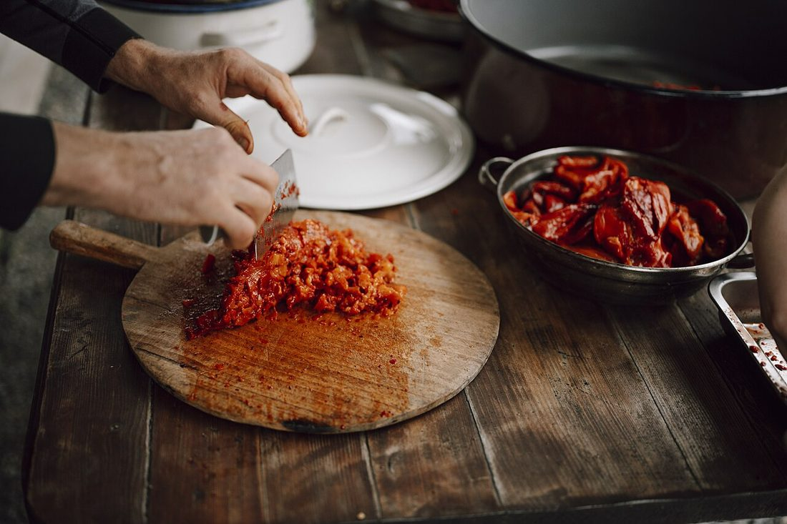
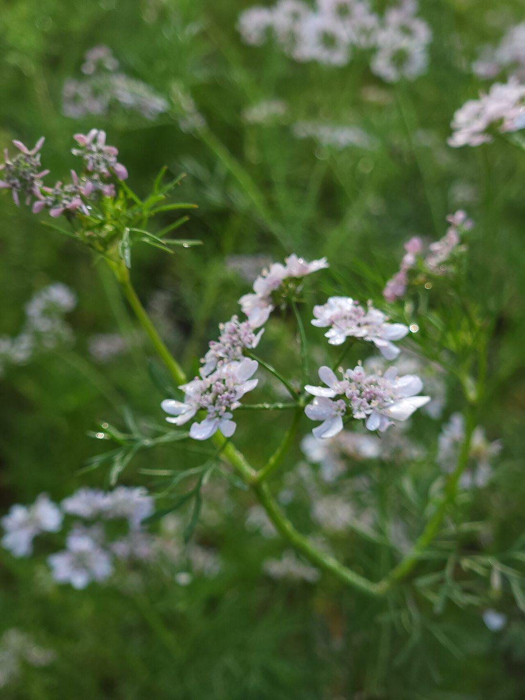
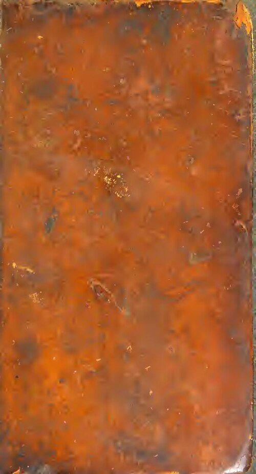
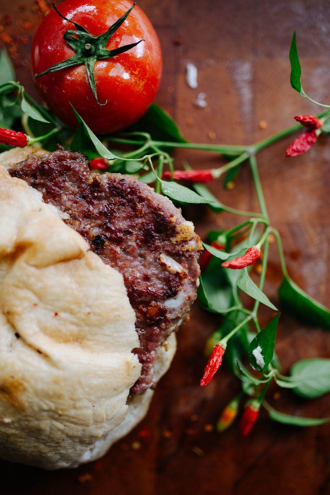
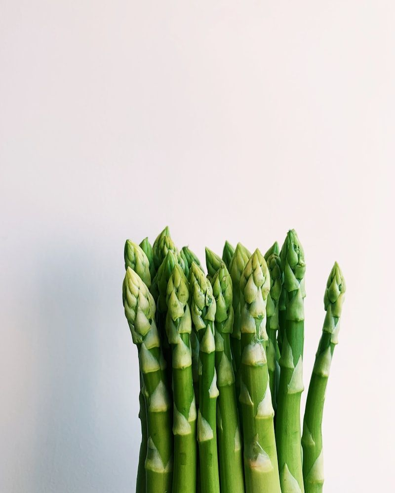
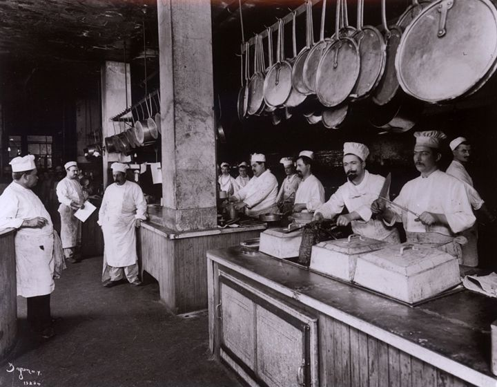
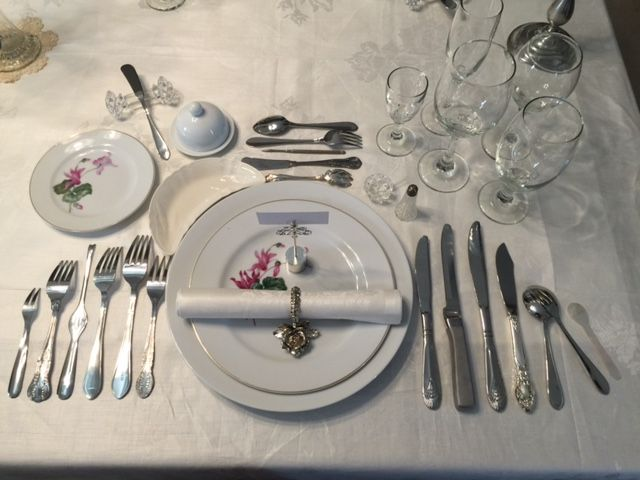

Reimagining Botanical Gastronomy Through Heirloom Herbs
At CorianderFare, we believe the most profound culinary revelations emerge not from exotic synthetic novelties, but from examining ancient botanical ingredients with scientific rigor and profound artistic reverence.
The Mercer Street Dining Vision
Founded by a collective of botanists, master sauciers, and biodynamic farmers, CorianderFare was born from a singular question: What happens when an ancient culinary plant, celebrated across five millennia of Mediterranean, Asian, and Mesoamerican cultures, is given center stage in modern fine dining?
Rather than relegating coriander to a casual finish, our kitchen explores its complete morphological journey—from the taproot anchoring into fertile organic compost to the white umbel blossoms waving under the morning sun.
Every evening in our historic Lower Manhattan dining room, our chefs translate this botanical fascination into multi-course tasting menus that challenge conventions and awaken forgotten sensory receptors.


Biodynamic Agriculture
We source exclusively from regenerative family farms in the Hudson Valley and organic cooperatives in Morocco and Rajasthan. Zero chemical fertilizers or synthetic pesticides are ever deployed on the soil that nourishes our crops.
Zero-Waste Whole-Plant Ethos
Every single fiber of the coriander plant is utilized in our kitchen. Taproots are braised for umami-rich glazes; stems are lacto-fermented for bright savory condiments; leaves are cold-pressed into translucent oils; seeds are slowly toasted over applewood coals.

Non-Alcoholic Pairing Pioneers
We believe paired beverages should elevate dishes through complementary chemistry. Our house-crafted cold-pressed shrubs, botanical ferments, and sparkling seed tisanes deliver complex acidity and aromatics without alcohol.

Harvested at Sunrise, Plated at Sunset
The volatile terpenes within fresh coriander leaves reach their maximum physiological concentration in the early morning hours, before the midday sun prompts natural evaporation through leaf stomata.
Our partner farm teams harvest tender greens at dawn, transporting them under temperature-controlled conditions to our Mercer Street kitchen within four hours of cutting.
This unbroken cold chain guarantees that when a dish arrives at your table, the fragrant oils burst across your senses with the same pristine vitality they possessed while rooted in living earth.
Moments From Farm to Table
Glimpses into our regenerative agricultural partners, open-hearth kitchen atelier, and intimate evening salon.


